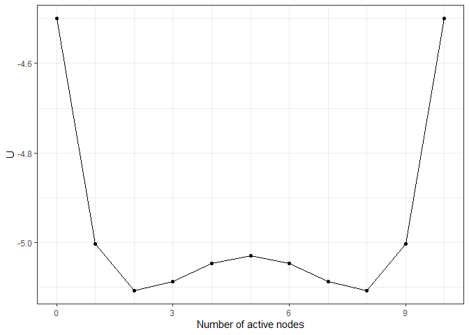
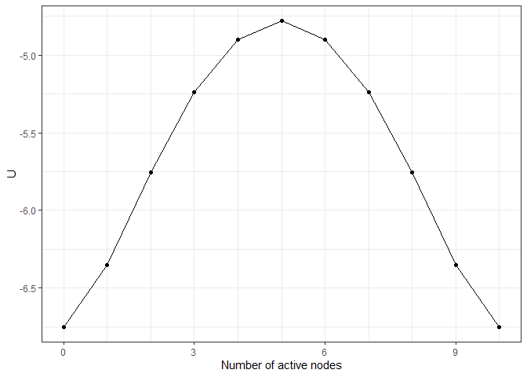
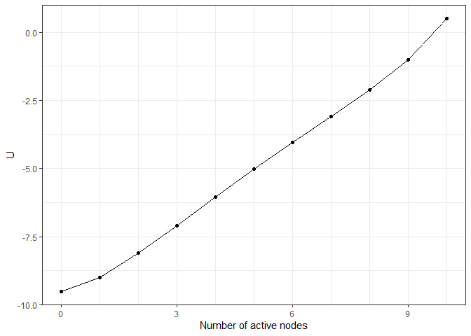
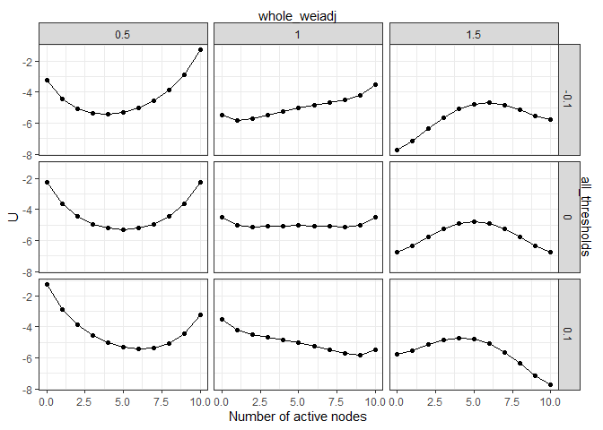
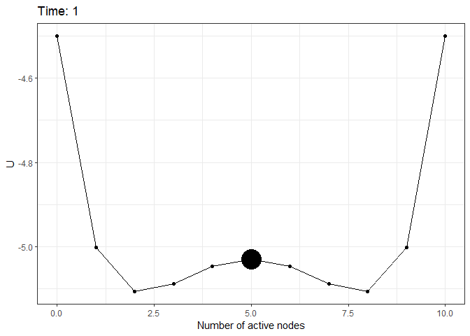
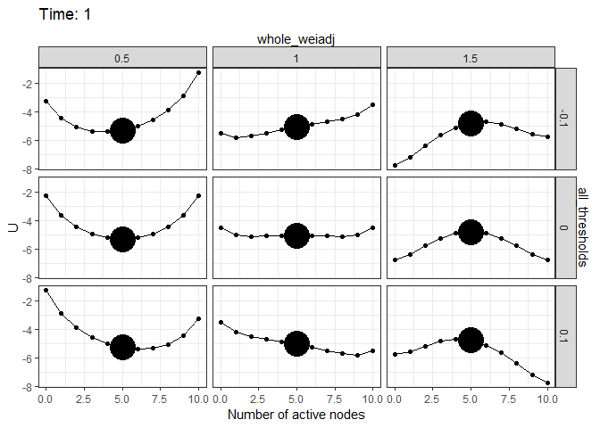

A toolbox for constructing potential landscapes for Ising networks. The parameters of the networks can be directly supplied by users or estimated by the IsingFit package https://CRAN.R-project.org/package=IsingFit from empirical data. The Ising model’s Boltzmann distribution is preserved for the potential landscape function. The landscape functions can be used for quantifying and visualizing the stability of network states, as well as visualizing the simulation process.
Installation
You can install the development version of Isinglandr from GitHub with:
# install.packages("devtools")
devtools::install_github("Sciurus365/Isinglandr")Example
Landscape construction
library(Isinglandr)
#> Registered S3 method overwritten by 'Isinglandr':
#> method from
#> print.landscape simlandr
# A toy network and its landscape
Nvar <- 10
m <- rep(0, Nvar)
w <- matrix(0.1, Nvar, Nvar)
diag(w) <- 0
result1 <- make_2d_Isingland(m, w)
plot(result1)
## What if the network becomes denser?
result2 <- make_2d_Isingland(m, 1.5 * w)
plot(result2)
## What if the thresholds become lower?
result3 <- make_2d_Isingland(m - 0.5, w)
plot(result3)
## Multiple networks together
result4 <- make_Ising_grid(
all_thresholds(seq(-0.1, 0.1, 0.1), .f = `+`),
whole_weiadj(seq(0.5, 1.5, 0.5)),
m, w
) %>% make_2d_Isingland_matrix()
plot(result4)
#> Scale for x is already present.
#> Adding another scale for x, which will replace the existing scale.
Simulation on landscapes
set.seed(1614)
sim1 <- simulate_Isingland(result1, initial = 5)
plot(sim1)
set.seed(1614)
sim4 <- simulate_Isingland(result4, initial = 5)
plot(sim4)
Shiny app
A shiny app is included in this package to show the landscape for the Ising network of major depressive disorder. The network parameters can be manipulated to see how they influence the landscape and the simulation. Run shiny_Isingland_MDD() to start it.